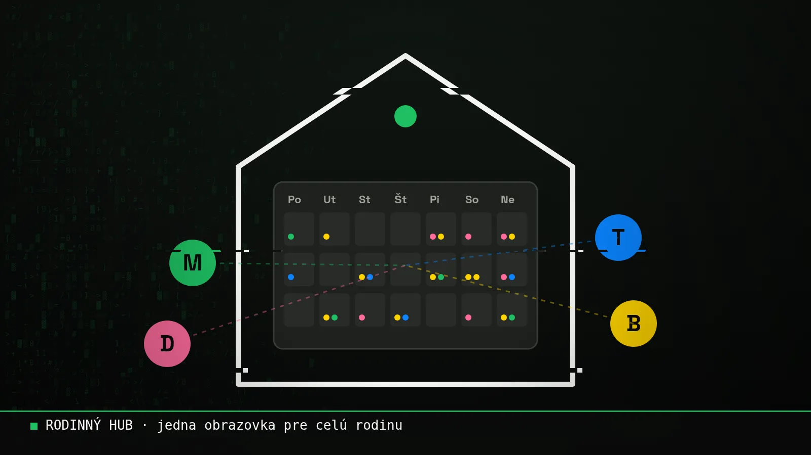

Blog ·
Rodinný hub: jedna obrazovka pre celú rodinu
Spoločný kalendár, správy a dokumenty na jednom mieste. Dokument stačí odfotiť a poslať jednému kontaktu v telefóne. Starí rodičia si doma len zapnú webovú stránku a vidia všetko.

Keď som si postavil Event Hub, appku na vlastnú robotu, došlo mi jedno: tento princíp nie je len pre prácu. Jedno miesto, kam sa všetko zbehne, a ktoré ti samo pripomenie, čo treba. Presne toto potrebuje aj väčšina rodín.
Čo je rodinný hub
Jednoduchá webová appka len pre vašu rodinu. Otvoríš odkaz na mobile, na počítači alebo na tablete a vidíš:
- Spoločný kalendárkto má kedy čo: krúžky, lekári, služobky, oslavy
- Dokumentypoistky, záruky, návody a papiere, ktoré vždy hľadáš, keď ich treba
- Domácnosť a účtykedy sa platí čo, čo treba kúpiť, kto čo vybavuje
- Správy a pripomienkyna jednom mieste, nie v piatich skupinových chatoch
Ako sa tam dostanú veci? Jednoducho.
- 01Odfotíšdokument, bloček, papier od lekára
- 02Pošlešna jeden kontakt, ktorý máš v telefóne
- 03Je v hubeuložené a roztriedené, všetci to vidia
- Cez kontakt v telefóneodfotíš a pošleš, to je celé
- Cez webovú stránkuprihlásiš sa v telefóne a odfotíš to aj z hocikoho iného telefónu
- Aj hlasovkaniekto ti pošle hlasovku a ty ju vieš preposlať rovno do hubu
Funguje to aj na cudzom telefóne. Vezmeš babke alebo kamarátovi telefón, odfotíš alebo nahráš, čo treba, označíš, komu to patrí, a cez webovú stránku to pošleš sebe do hubu.
Obrazovka pre starých rodičov
Toto je časť, ktorú mám najradšej. Starí rodičia si doma len zapnú webovú stránku na televízore alebo tablete a vidia všetko na jednej obrazovke. Kedy prídu vnúčatá, kto je práve kde, na akej akcii alebo projekte robia ich deti.
Áno, je to displej navyše. Ale pre starších rodičov môže znamenať, že sú v obraze, bez toho, aby sa museli učiť nové appky.
Žiadne zložité ovládanie. Len obrazovka, ktorá sa sama aktualizuje.
Súkromie je základ
Rodinné dáta sú tie najcitlivejšie. Preto platí jednoduché pravidlo: vidí to len ten, koho pozveš. Kto je kde, sa ukazuje len so súhlasom daného človeka a dá sa to kedykoľvek vypnúť. A žiadne rodinné dáta nepatria do verejných AI chatov. Viac o tom v článku Čo AI nikdy nedávaj.
A čo bankové veci?
S bankovými a finančnými vecami osobne nerobím. Mám ale v tíme ľudí, ktorí vedia zabezpečiť aj také veci. Ak sa k tomu raz dostaneme, stretneme sa a vyriešime to spolu. Ja nebudem ten, kto to rieši, ale ten človek je pripravený.
Môj pohľad
Každá rodina má svoj chaos. Niekde je to kalendár, inde papiere, inde to, že babka nevie, kedy prídete. Rodinný hub nemusí vedieť všetko. Stačí, keď vyrieši tú jednu vec, ktorá vás najviac trápi.
Ak by ste takú vec chceli, napíš mi. Povieme si, čo by vám pomohlo najviac, a postavím ju na mieru.
Chceš si niečo také vyskúšať sám? Na 3-hodinovej session ťa to naučím na tvojich vlastných veciach.
15 min hovor zadarmo